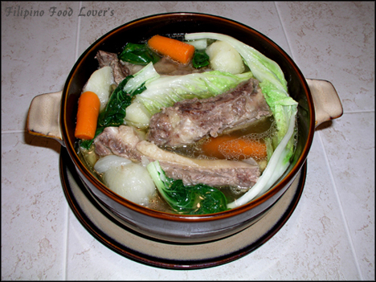
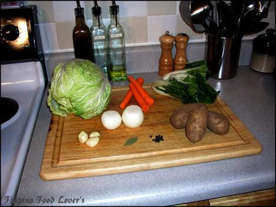
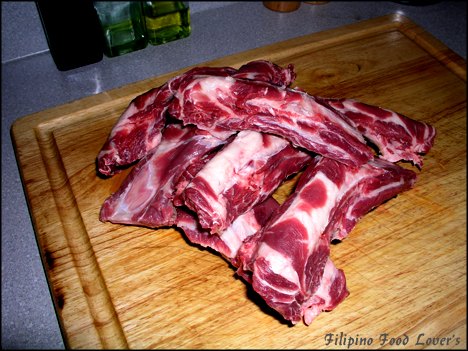
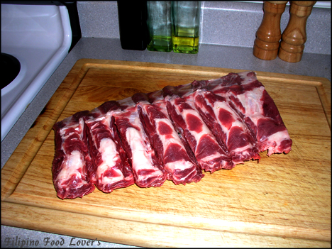

Nilagang Buto ng Baka
This is one of my favorite comfort foods.
It reminds me a lot of hot summer days in the Philippines sipping on a hot broth during lunchtime.
With a little bit of fish sauce (patis) for dipping sauce, spiced up with Thai peppers, (siling labuyo) it really brings out my appetite.
I have two different versions of this recipe. I like the simple version myself.

Cooking Tip:
I used Beef Back ribs for this recipe.
It’s tender and there is still plenty of meat on the bone.
You may also use beef shanks (Bulalo Bones, Bone Marrow).
For those the cooking time will be 1-2 hours depending on how tender you want the meat.
If you do use the Beef Shanks try to be careful when you remove the meat from the pot so it won’t fall apart on you as you arrange it on the platter or to individual serving bowls.
Version One: Tagalog Style!
Ingredients:
- 2 Lbs. Soup Bones
- 1 Large Onion Whole, Skinned and Pierced in several places
- 12 Whole Black Peppercorns
- 4 Cloves of Garlic Skinned
- 1 Bay leaf (*Laurel leaf)
- 2 Large Carrots
- 3 Bunches of Bok-choy (*Pechay)
- 4 Pieces of Napa Cabbage or regular Cabbage
- 5 Potatoes, Peeled and Quartered
- 2 Beef Bouillon (optional)
- 1 Tbs. Salt
- 1 Tbs. MSG (optional)
Cooking Directions:
- Wash the soup bones and place them in the pot. Cover with water and add the salt. Bring it to a boil and remove the scum, then add the whole onion, Bay leaf, Peppercorns, Garlic, and MSG. Reduce heat to medium low and let it simmer for 35 minutes. After the meat is tender, remove the meat and set it aside in a covered dish. In the stock, add the Carrots and let it cook for 8 minutes.
- Then add the potatoes and cook for an additional 10 minutes. Make sure you check for doneness. You might have to let it cook a little bit longer depending on the size of the potatoes. Next add the Napa Cabbage and cook for 2 minutes and then add the Bok-choy and let it cook for another 3 minutes. Arrange the soup bones in the platter or to an individual serving bowl. Pour the stock and arrange the vegetables on the top of the platter.
- Serve with White steamed rice with Patis and Calamansi for dipping sauce. Enjoy!
Version Two: My Mother’s Recipe! (simple)
Ingredients:
- 1-1/2 Lb. Soup Bones
- 1 Large Onion Sliced Crosswise
- 1 Medium Size Ginger Root, Peeled and Sliced Thinly
- 3 Bunches of Bok-choy (*Pechay)
- 1 Tbs. Salt
- 1 Tbs. MSG (optional)
Cooking Ingredients:
- Wash the soup bones and place them in the pot.
- Cover with water and add the salt and MSG.
- Bring it to boil and remove the scum. Then add the Onion and Ginger Root.
- Reduce heat to medium low and let it simmer for 35 minutes.
- After the meat is tender you can add the Bok-choy and let it cook for an additional 2 minutes.
- Serve with White steamed rice with Patis and Calamansi for dipping sauce. Enjoy!
Glossary:
Calamansi = Filipino Limes
Patis = Fish Sauce (Rufina Brand is one of the Popular ones.)
Pechay = Bok-choy
Laurel = leaf Bay leaf


